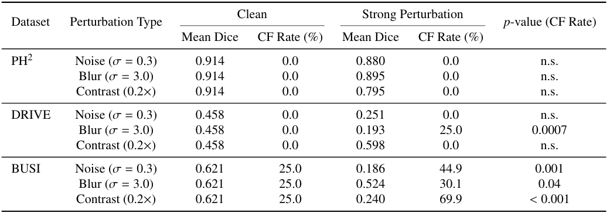
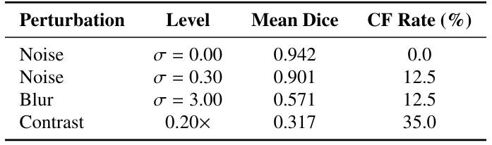

UNet Robustness Across Modalities
This sub-study extends the Catastrophic Failure Rate framework to deep neural segmentation models. We analyze how a standard UNet behaves under noise, corruption, and modality shift across three medical imaging datasets.
Motivation
Deep segmentation models are often evaluated using clean test sets. This experiment asks a simple question: does strong average Dice imply robustness? By systematically corrupting inputs, we reveal failure patterns that average metrics alone fail to expose.
Datasets
DRIVE: retinal vessel segmentation (grayscale)
BUSI: breast ultrasound lesion segmentation
PH²: dermoscopy lesion segmentation
These datasets represent different imaging modalities, textures, and noise characteristics.
Experimental Setup
A standard UNet architecture was trained independently on each dataset. At test time, Gaussian noise and corruption levels were applied to simulate acquisition degradation. Dice score and CF Rate trends were tracked under increasing noise.

Results
Robustness behavior varied strongly by modality. Retinal images (DRIVE) showed gradual degradation, while ultrasound images (BUSI) exhibited abrupt collapse under moderate noise. PH² displayed intermediate behavior.
Failure Analysis
Failure cases reveal that texture complexity, speckle noise, and boundary ambiguity play a key role in robustness collapse. These findings support the broader claim that safety-oriented metrics are required even for deep models.
Key Takeaways
- High clean-set Dice does not guarantee robustness.
- Modality shift strongly affects failure behavior.
- Ultrasound segmentation is especially fragile.
- CF Rate complements Dice for deep models.